Qué trata cada uno de los 40 patrones y cómo se mueve su volumen semanal
Los patrones son los 40 grupos de narrativas de M7 (PCA 256 → UMAP 15 → k-means), fijados con las filas de ajuste. Son una partición útil del espacio semántico, no categorías del banco: los términos y los ejemplos dicen de qué habla cada uno, y la serie muestra su volumen semanal con la banda predictiva del modelo de conteos vigente (nb_discounted_hierarchical_v1) y las alertas de M11.
Términos por TF-IDF de clase; «texto único» es la fracción de narrativas distintas y «plantilla dominante» la fracción que repite el texto más frecuente. Volumen medio en semanas completas. Commit 847ceae3.
| Patrón | Producto dominante | Ajuste (filas) | Ajuste | Calibración | 2025-H1 | Alertas cal. | Alertas 2025-H1 | Términos |
|---|---|---|---|---|---|---|---|---|
| 0 | Credit reporting or other personal consumer reports (84%) | 1,947 | 21 · 0% | 23 · 0% | 5 · 0% | 0 | 1 | disputes, submitting disputes, getting inaccurate, send disputes, bureaus having |
| 1 | Credit reporting or other personal consumer reports (86%) | 5,995 | 66 · 1% | 88 · 0% | 194 · 1% | 0 | 1 | 100, credit, 100 accurate, reporting 100, credit report |
| 2 | Credit reporting or other personal consumer reports (98%) | 8,520 | 93 · 1% | 281 · 2% | 468 · 2% | 0 | 1 | section, information, consumer, 15, reporting |
| 3 | Credit reporting or other personal consumer reports (89%) | 35,532 | 388 · 3% | 1207 · 7% | 2242 · 9% | 0 | 3 | redacted, redacted redacted, account, credit, information |
| 4 | Credit reporting or other personal consumer reports (98%) | 13,290 | 146 · 1% | 123 · 1% | 131 · 1% | 0 | 1 | redacted redacted, redacted, validate, erroneous, credit |
| 5 | Credit reporting or other personal consumer reports (85%) | 9,474 | 104 · 1% | 311 · 2% | 256 · 1% | 0 | 0 | consumer, 15, section, states, reporting |
| 6 | Credit reporting or other personal consumer reports (100%) | 13,745 | 151 · 1% | 163 · 1% | 186 · 1% | 0 | 1 | redacted redacted, redacted, redacted balance, 00 redacted, balance |
| 7 | Credit reporting or other personal consumer reports (93%) | 11,531 | 126 · 1% | 211 · 1% | 222 · 1% | 0 | 1 | redacted redacted, redacted, report, credit, disputes |
| 8 | Checking or savings account (39%) | 119,770 | 1313 · 12% | 1544 · 9% | 4165 · 12% | 0 | 1 | bank, card, account, redacted, 00 |
| 9 | Credit reporting or other personal consumer reports (85%) | 2,670 | 29 · 0% | 21 · 0% | 15 · 0% | 0 | 0 | complaint, party, complaint error, party involved, involved |
| 10 | Credit reporting or other personal consumer reports (97%) | 9,158 | 101 · 1% | 253 · 1% | 206 · 1% | 1 | 0 | redacted redacted, redacted, report, credit, credit report |
| 11 | Credit reporting or other personal consumer reports (97%) | 97,126 | 1065 · 9% | 1373 · 8% | 1549 · 6% | 0 | 3 | redacted redacted, redacted, 00, 00 redacted, redacted balance |
| 12 | Debt collection (55%) | 86,363 | 946 · 8% | 1324 · 7% | 1809 · 7% | 0 | 1 | debt, collection, redacted, redacted redacted, account |
| 13 | Credit reporting or other personal consumer reports (37%) | 97,382 | 1067 · 10% | 1302 · 7% | 2055 · 8% | 0 | 2 | loan, redacted, mortgage, payment, redacted redacted |
| 14 | Credit reporting or other personal consumer reports (94%) | 176,716 | 1936 · 17% | 4042 · 23% | 7844 · 30% | 1 | 3 | redacted, redacted redacted, account, credit, report |
| 15 | Credit reporting or other personal consumer reports (98%) | 7,597 | 83 · 1% | 56 · 0% | 36 · 0% | 0 | 0 | letters, bureaus continuously, far gotten, happened mailed, continuously far |
| 16 | Credit reporting or other personal consumer reports (96%) | 9,342 | 102 · 1% | 261 · 1% | 190 · 1% | 0 | 0 | consumer, 15, section, reporting agency, 1681 |
| 17 | Credit reporting or other personal consumer reports (94%) | 71,113 | 779 · 7% | 605 · 3% | 503 · 2% | 0 | 1 | redacted account, account, account redacted, section, redacted |
| 18 | Credit reporting or other personal consumer reports (88%) | 10,792 | 118 · 1% | 124 · 1% | 74 · 0% | 0 | 0 | redacted redacted, redacted, permitted, legitimate activity, report |
| 19 | Credit reporting or other personal consumer reports (91%) | 63,214 | 693 · 6% | 1378 · 8% | 1627 · 6% | 0 | 1 | credit, credit report, report, redacted redacted, redacted |
| 20 | Credit reporting or other personal consumer reports (99%) | 3,371 | 37 · 0% | 32 · 0% | 13 · 0% | 0 | 0 | consumer reports, consent, reports, consumer, consent fraud |
| 21 | Credit reporting or other personal consumer reports (57%) | 4,109 | 45 · 0% | 50 · 0% | 71 · 0% | 0 | 1 | start investigation, bureau start, documents want, want bureau, start |
| 22 | Credit reporting or other personal consumer reports (96%) | 12,879 | 141 · 1% | 190 · 1% | 201 · 1% | 0 | 1 | redacted redacted, redacted, law, written requests, violation federal |
| 23 | Credit reporting or other personal consumer reports (96%) | 6,407 | 70 · 1% | 108 · 1% | 137 · 1% | 0 | 0 | 15, consumer, agency, section, reporting |
| 24 | Credit reporting or other personal consumer reports (84%) | 9,733 | 106 · 1% | 167 · 1% | 134 · 1% | 0 | 0 | redacted redacted, items, redacted, stress, accounts |
| 25 | Credit reporting or other personal consumer reports (97%) | 14,204 | 156 · 1% | 164 · 1% | 188 · 1% | 0 | 1 | sections 609, sections, 609 611, 609, redacted |
| 26 | Credit reporting or other personal consumer reports (91%) | 11,256 | 123 · 1% | 126 · 1% | 133 · 1% | 0 | 0 | accounts, credit, report, credit report, information |
| 27 | Credit reporting or other personal consumer reports (99%) | 8,018 | 88 · 1% | 63 · 0% | 30 · 0% | 0 | 0 | redacted redacted, redacted, report, credit report, inquiry credit |
| 28 | Credit reporting or other personal consumer reports (80%) | 6,960 | 76 · 1% | 208 · 1% | 150 · 1% | 0 | 0 | accounts, report, debt, credit, 15 |
| 29 | Credit reporting or other personal consumer reports (98%) | 9,166 | 100 · 1% | 115 · 1% | 246 · 1% | 1 | 1 | identity, theft, identity theft, redacted redacted, redacted |
| 30 | Credit reporting or other personal consumer reports (87%) | 21,597 | 236 · 2% | 406 · 2% | 369 · 1% | 0 | 1 | payment, late, payments, creditor, mailed delivered |
| 31 | Credit reporting or other personal consumer reports (78%) | 8,060 | 88 · 1% | 250 · 1% | 313 · 1% | 0 | 0 | need reporting, reporting correction, correction company, identified inaccurate, inaccurate accounts |
| 32 | Credit reporting or other personal consumer reports (95%) | 9,040 | 99 · 1% | 108 · 1% | 86 · 0% | 1 | 1 | redacted redacted, redacted, credit, late payment, section |
| 33 | Credit reporting or other personal consumer reports (88%) | 7,051 | 77 · 1% | 15 · 0% | 14 · 0% | 0 | 0 | payments, updated records, consistently maintained, precise updated, seeking precise |
| 34 | Credit reporting or other personal consumer reports (99%) | 6,530 | 72 · 1% | 35 · 0% | 32 · 0% | 0 | 1 | letters, bureaus continuously, happened mailed, really sure, far gotten |
| 35 | Credit reporting or other personal consumer reports (100%) | 2,888 | 32 · 0% | 28 · 0% | 11 · 0% | 0 | 0 | dispute incorrect, invalid items, referenced issues, incorrect invalid, letter referenced |
| 36 | Credit reporting or other personal consumer reports (96%) | 53,587 | 587 · 5% | 633 · 4% | 826 · 3% | 0 | 1 | consumer, information, redacted, reporting, 15 |
| 37 | Credit reporting or other personal consumer reports (85%) | 6,255 | 69 · 0% | 88 · 1% | 76 · 0% | 0 | 1 | letters, reporting, inaccurate date, date, written |
| 38 | Credit reporting or other personal consumer reports (97%) | 6,321 | 69 · 1% | 245 · 1% | 196 · 1% | 0 | 0 | payment, late, complaint, error, creditor |
| 39 | Credit reporting or other personal consumer reports (95%) | 8,485 | 93 · 1% | 166 · 1% | 147 · 1% | 0 | 0 | section, consumer, 15, information, 1681 |
Columnas de volumen: reclamos por semana · porcentaje del total semanal.
disputes, submitting disputes, getting inaccurate, send disputes, bureaus having, disputes getting, tried send, information corrected, corrected credit, difficulties submitting
ajuste: 21 reclamos/semana (0% del total) · calibración: 23 reclamos/semana (0% del total) · 2025-H1: 5 reclamos/semana (0% del total).
sin alertas CUSUM en calibración; en 2025-H1 (ya consultado): 1 semanas.
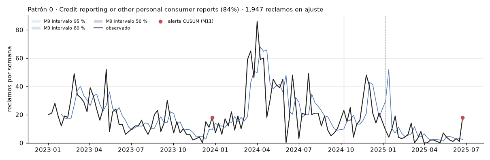
2023-03-02 · Credit reporting or other personal consumer reports
i submitted numerous of disputes and called the reporting agencies to resolve issues on my credit report and all i received was refusal to send me to the right departments and even calls hung up in my face
2024-09-30 · Credit reporting or other personal consumer reports
I was attempting to sign up for credit reporting agencies and kept hitting road blocks meanwhile it was difficult to get a hold of customer service.
2024-08-12 · Credit reporting or other personal consumer reports
I have tried to send my disputes to the major credit bureaus but are having difficulties in submitting my disputes and getting the inaccurate information corrected on my credit report.
100, credit, 100 accurate, reporting 100, credit report, accurate, report, accounts, did, reporting
ajuste: 66 reclamos/semana (1% del total) · calibración: 88 reclamos/semana (0% del total) · 2025-H1: 194 reclamos/semana (1% del total).
sin alertas CUSUM en calibración; en 2025-H1 (ya consultado): 1 semanas.
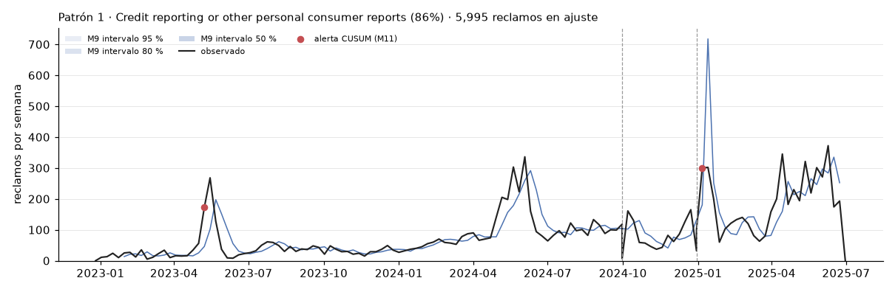
2023-02-22 · Credit reporting or other personal consumer reports
Recently I did an investigation on my credit report which caused anxiety beyond belief. I found information that was unverifiable, invalidated, inaccurate, and highly questionable that the agencies didn't make sure it was reporting 100 % c…
2024-07-11 · Credit reporting or other personal consumer reports
The credit reporting agencies stated that these accounts were properly investigated and came back as verified. However, how is this true when there are several inaccuracies showing on my report? As a consumer, I request to know all the ste…
2024-06-21 · Credit reporting or other personal consumer reports
The credit reporting agencies stated that these accounts were properly investigated and came back as verified. However, how is this true when there are several inaccuracies showing on my report? As a consumer, I request to know all the ste…
section, information, consumer, 15, reporting, items, agency, reporting agency, 1681, states
ajuste: 93 reclamos/semana (1% del total) · calibración: 281 reclamos/semana (2% del total) · 2025-H1: 468 reclamos/semana (2% del total).
sin alertas CUSUM en calibración; en 2025-H1 (ya consultado): 1 semanas.
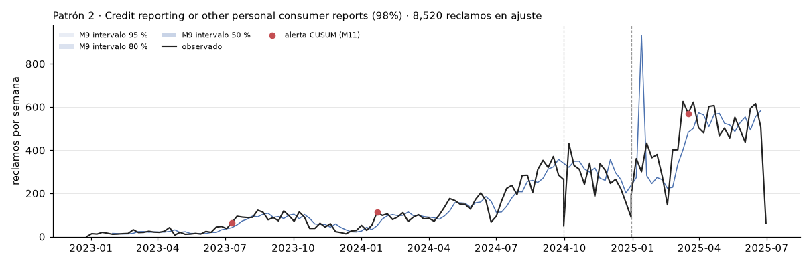
2024-07-05 · Credit reporting or other personal consumer reports
-- -- -- -- -- -- -- -- In accordance with the Fair Credit Reporting act. The List of accounts below has violated my federally protected consumer rights to privacy and confidentiality under 15 USC 1681. 15 U.S.C 1681 section 602 A. States …
2024-09-20 · Credit reporting or other personal consumer reports
In accordance with the Fair Credit Reporting Act, the list of accounts below has violated my federally protected consumer rights to privacy and confidentiality under 15 USC 1681. 15 U.S.C. 1681, section 602 ( A ), states that I have the ri…
2024-09-30 · Credit reporting or other personal consumer reports
In accordance with the Fair Credit Reporting act. The List of accounts below has violated my federally protected consumer rights to privacy and confidentiality under XXXX5 USC 1681. 15 U.S.C 1681 section 602 A. States I have the right to p…
redacted, redacted redacted, account, credit, information, consumer, reporting, report, fcra, credit report
ajuste: 388 reclamos/semana (3% del total) · calibración: 1207 reclamos/semana (7% del total) · 2025-H1: 2242 reclamos/semana (9% del total).
sin alertas CUSUM en calibración; en 2025-H1 (ya consultado): 3 semanas.
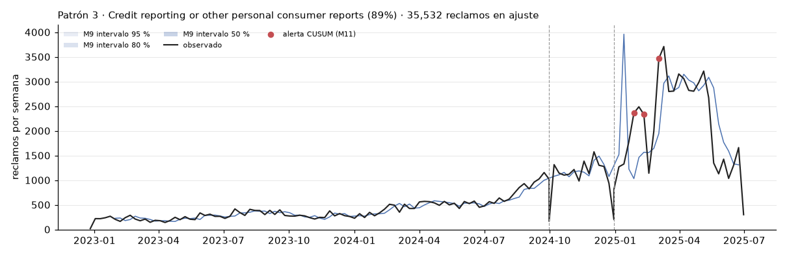
2023-05-20 · Debt collection
United revenue corporation, has failed to provide all proper documents to validate and verify the alleged debts. Which is a clear violation of my rights according to 15 U.S.C 1692g validation of debts. I am disputing three accounts. Accoun…
2023-11-06 · Debt collection
IN ACCORDANCE WITH THE FAIR DEBT COLLECTION PRACTICE ACT. I DISPUTED THE DEBT AND COLLECTION ALSO REQUEST DEBT VALIDATION. I SEEK COPY OF NAME AND ADDRESS OF THE ORIGINAL CREDITOR AND / OR SUPPORTING EVIDENCE OF ALLEGE DEBT. AMERICAN PROFI…
2023-11-16 · Credit reporting or other personal consumer reports
Upon looking on my credit report i noticed these companies on my report that i have n knowledge of and have never directly done business with. Ive mailed multiple letters asking the credit bureaus to verify that all information is correct …
redacted redacted, redacted, validate, erroneous, credit, authorized fail, proof period, period allowed, allowed law, file listed
ajuste: 146 reclamos/semana (1% del total) · calibración: 123 reclamos/semana (1% del total) · 2025-H1: 131 reclamos/semana (1% del total).
sin alertas CUSUM en calibración; en 2025-H1 (ya consultado): 1 semanas.
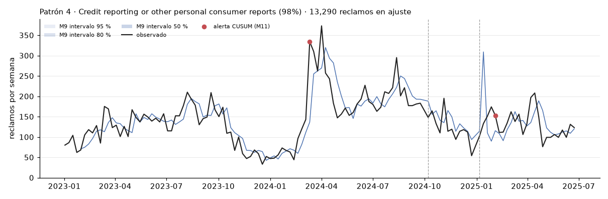
2023-09-27 · Credit reporting or other personal consumer reports
When I reviewed my credit report, I discovered that some of the information was erroneous. The 3 credit bureaus must validate these accounts in line with Sections 609 ( a ) ( 1 ) ( A ) and 611 ( a ) ( 1 ) ( A ). It is not authorized to fai…
2023-10-03 · Credit reporting or other personal consumer reports
When I reviewed my credit report, I discovered that this account was erroneous. The 3 credit bureaus must validate this account in line with Sections 609 ( a ) ( 1 ) ( A ) and 611 ( a ) ( 1 ) ( A ). It is not authorized to fail to validate…
2023-05-03 · Credit reporting or other personal consumer reports
When I reviewed my credit report, I discovered that some of the information was erroneous. The PORTFOLIO must validate this account in line with Sections 609 ( a ) ( 1 ) ( A ) and 611 ( a ) ( 1 ) ( A ). It is not authorized to fail to vali…
consumer, 15, section, states, reporting, report, reporting agency, 1681, consumer reporting, credit
ajuste: 104 reclamos/semana (1% del total) · calibración: 311 reclamos/semana (2% del total) · 2025-H1: 256 reclamos/semana (1% del total).
sin alertas CUSUM en calibración.
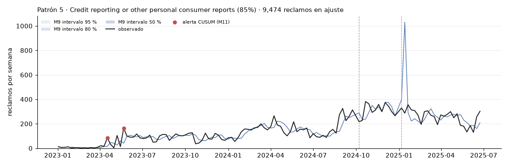
2024-09-02 · Credit reporting or other personal consumer reports
After reviewing my consumer report I've noticed that. there is a collection account reporting. I asked the creditor that's reporting this account to send me all documents that verifies the alleged debt. They failed to respond to me with an…
2024-05-21 · Credit reporting or other personal consumer reports
In accordance with the Fair Credit Reporting act. The List of accounts below has violated my federally protected consumer rights to privacy and confidentiality under 15 USC 1681. 15 U.S.C 1681 section 602 A. States I have the right to priv…
2023-08-19 · Credit reporting or other personal consumer reports
I n accordance with the Fair Credit Reporting act. The List of accounts below has violated my federally protected consumer rights to privacy and confidentiality under 15 USC 1681. 15 U.S.C 1681 section 602 A. States I have the right to pri…
redacted redacted, redacted, redacted balance, 00 redacted, balance, 00, records, complain question, question specific, coming wrongdoing
ajuste: 151 reclamos/semana (1% del total) · calibración: 163 reclamos/semana (1% del total) · 2025-H1: 186 reclamos/semana (1% del total).
sin alertas CUSUM en calibración; en 2025-H1 (ya consultado): 1 semanas.
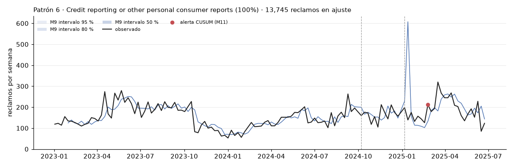
2023-03-18 · Credit reporting or other personal consumer reports
This is my Follow-up endeavor to tell you that I am a victim of identity theft and I complain to question specific items in my document coming about because of the wrongdoing. The items I am questioning connect with no exchanges acquiring …
2023-03-29 · Credit reporting or other personal consumer reports
This is my second endeavor to tell you that I am a victim of identity theft and I complain to question specific records in my document coming about because of the wrongdoing. The records I am questioning connect with no exchanges acquiring…
2023-03-10 · Credit reporting or other personal consumer reports
This is my second endeavor to tell you that I am a victim of identity theft and I complain to question specific records in my document coming about because of the wrongdoing. The records I am questioning connect with no exchanges acquiring…
redacted redacted, redacted, report, credit, disputes, accounts, credit report, verify, 3rd party, information
ajuste: 126 reclamos/semana (1% del total) · calibración: 211 reclamos/semana (1% del total) · 2025-H1: 222 reclamos/semana (1% del total).
sin alertas CUSUM en calibración; en 2025-H1 (ya consultado): 1 semanas.
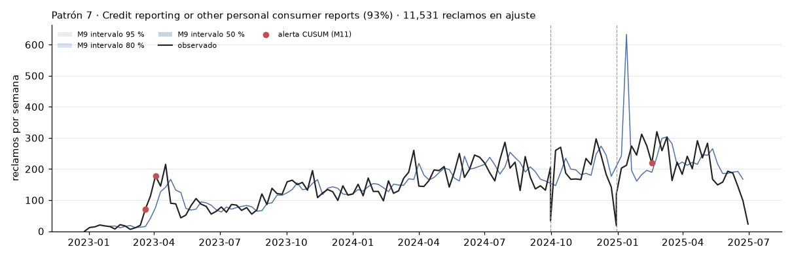
2023-07-26 · Credit reporting or other personal consumer reports
Your efficiency and prompt attention to correcting some of the adverse information previously stated on my credit file is appreciated, yet there are still items that need to be addressed again and to be corrected immediately. The three cre…
2023-09-29 · Credit reporting or other personal consumer reports
Your efficiency and prompt attention to correcting some of the adverse information previously stated on my credit file is appreciated, yet there are still items that need to be addressed again and to be corrected immediately. The three cre…
2023-10-05 · Credit reporting or other personal consumer reports
Your efficiency and prompt attention to correcting some of the adverse information previously stated on my credit file is appreciated, yet there are still items that need to be addressed again and to be corrected immediately. The three cre…
bank, card, account, redacted, 00, told, money, called, funds, check
ajuste: 1313 reclamos/semana (12% del total) · calibración: 1544 reclamos/semana (9% del total) · 2025-H1: 4165 reclamos/semana (12% del total).
sin alertas CUSUM en calibración; en 2025-H1 (ya consultado): 1 semanas.
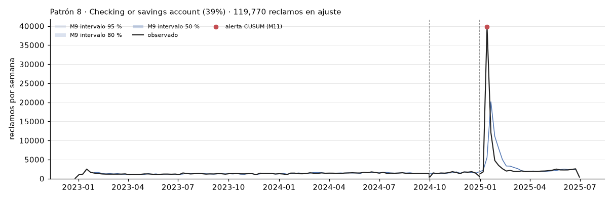
2023-05-22 · Checking or savings account
I have been a XXXX XXXX and I received a wisely card with my direct deposits in XXXX. I worked through XXXX and got direct deposits on the wisely card. I have some direct deposit set up on my card but it is not my main card. On XX/XX/XXXX,…
2023-03-28 · Credit card or prepaid card
This makes the 3rd complaint I have made about setting up the direct deposit on my way2go card. I am unable to do that. I file a complaint a person calls me back and tells me that she ( XXXX ) is not able to assist me. That she has to file…
2024-01-26 · Credit card
This new complaint is related to the previous complaint case XXXX against Commerce Bank for their illegal activities which was filed on XX/XX/2024. In this new complaint dated XX/XX/XXXX, XXXX is complaining about a second un-authorized ba…
complaint, party, complaint error, party involved, involved, reported, error, involved filing, complaint complaint, redacted party
ajuste: 29 reclamos/semana (0% del total) · calibración: 21 reclamos/semana (0% del total) · 2025-H1: 15 reclamos/semana (0% del total).
sin alertas CUSUM en calibración.
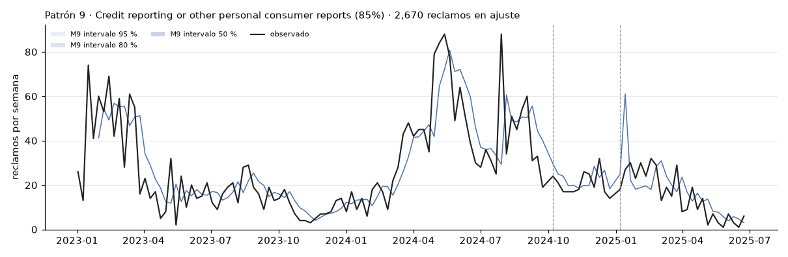
2023-01-15 · Credit reporting or other personal consumer reports
This is my XXXX nd time submitting a dispute to the company. Each time they keep sending me a letter saying they are not going to investigate. This is extremely inappropriate as I am trying to get my credit report to report accurately.
2023-08-21 · Credit reporting or other personal consumer reports
The Credit Reporting Agency XXXX had access to and knowingly stole my non-public information and furnished a credit report. They are a non-affiliated third party as I have them no written permission to do so
2024-09-13 · Credit reporting or other personal consumer reports
I am writing this letter as my third attempt to dispute and rectify the inaccurate negative items listed on my credit report with XXXX and Experian. Despite my previous disputes, these errors remain unresolved, and it is unacceptable that …
redacted redacted, redacted, report, credit, credit report, consent, complaint, erroneous information, reports, written consent
ajuste: 101 reclamos/semana (1% del total) · calibración: 253 reclamos/semana (1% del total) · 2025-H1: 206 reclamos/semana (1% del total).
alertas CUSUM en calibración: 2024-12-02.
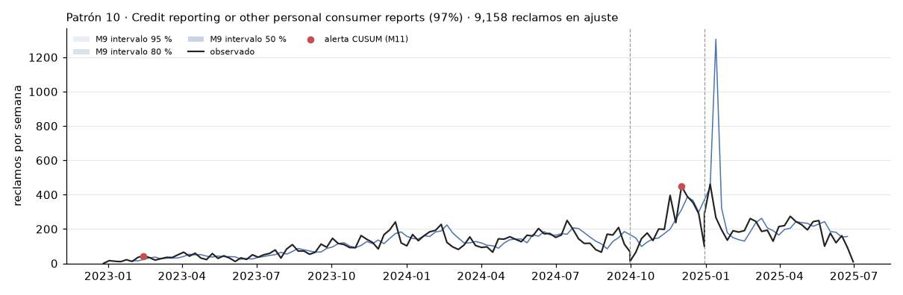
2024-03-18 · Credit reporting or other personal consumer reports
I am sending you this complaint to inform you that this company made an unauthorized inquiry on my personal credit report. I have listed the company 's name below, and the dates the inquiry was made. Since I did not authorize this company …
2024-03-04 · Credit reporting or other personal consumer reports
I am sending you this complaint to inform you that this company made an unauthorized inquiry on my personal credit report. I have listed the company 's name below, and the dates the inquiry was made. Since I did not authorize this company …
2023-10-19 · Credit reporting or other personal consumer reports
This company keeps sending unsolicited marketing services for credit repair that I do not need and they will not stop. The email is : XXXX XXXX
redacted redacted, redacted, 00, 00 redacted, redacted balance, balance, credit, inquiries, items, remove
ajuste: 1065 reclamos/semana (9% del total) · calibración: 1373 reclamos/semana (8% del total) · 2025-H1: 1549 reclamos/semana (6% del total).
sin alertas CUSUM en calibración; en 2025-H1 (ya consultado): 3 semanas.
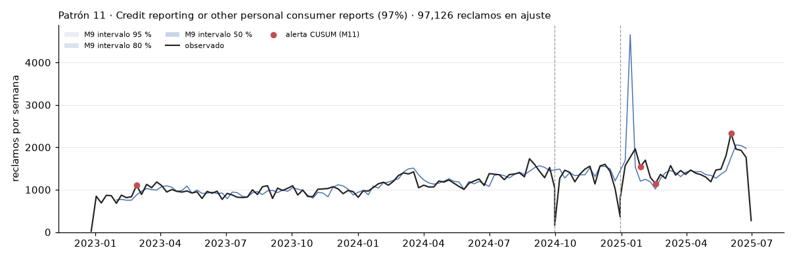
2023-04-15 · Credit reporting or other personal consumer reports
Consider This Complaint as a Follow-up to my previous complaint. My previous Complaint contains these fraudulent items XXXX XXXX XXXX XXXX XXXX XXXX XXXX XXXX XXXX XXXX XXXX XXXX XXXX XXXX XXXX XXXX XXXX XXXX XXXX XXXX XXXX XXXX XXXX XXXX …
2024-04-05 · Credit reporting or other personal consumer reports
I have send ftc report to XXXX and XXXX violation under the section 1681I I NEED ALL THIS ACCOUNT OF MY CREDIT XXXX XXXX XXXX XXXX XXXX XXXX XXXX XXXX XXXX XXXX XXXX XXXX XXXX XXXX XXXX XXXX XXXX XXXX XXXX XXXX XXXX XXXX XXXX XXXX XXXX XXX…
2023-03-03 · Credit reporting or other personal consumer reports
Im submitting a complaint to you today to inform you I was the victim of identity theft. I need the items to be removed ASAP for their erroneous status. Please find the ATTACHED documents to assist in blocking the erroneous information whi…
debt, collection, redacted, redacted redacted, account, company, alleged, credit, collect, validation
ajuste: 946 reclamos/semana (8% del total) · calibración: 1324 reclamos/semana (7% del total) · 2025-H1: 1809 reclamos/semana (7% del total).
sin alertas CUSUM en calibración; en 2025-H1 (ya consultado): 1 semanas.
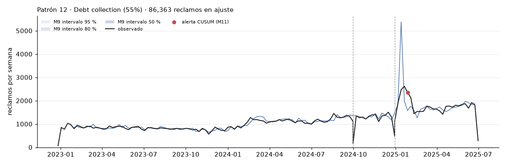
2023-03-08 · Debt collection
This is my 3rd attempt to remove this debt collection from my credit report. XXXX XXXX XXXX has sold my XXXX collection to re-collectors, again and again. As stated on my credit report, my vehicle was repossessed in XX/XX/XXXX, and do not …
2023-04-19 · Credit reporting or other personal consumer reports
COMPANY AT FAULT : ZION DEBT HOLDINGS LLC THIS COMPANY HAS REPORTED NEGATIVE INACCURATE INFORMATION ON MY CREDIT REPORTS. IT HAS CAUSE SEVERE HARM TO MY CREDIT SCORE AND IMAGE. I HAVE SPOKEN TO THIS COMPANY PREVIOUSLY AND EXPLAIN TO THEM T…
2023-02-18 · Credit reporting or other personal consumer reports
I suspect that a debt collector has intentionally re-aged my debt. This is a 5 year old debt, from XXXX, that was closed and written off by the original company. Following this, it was deleted off all my credit reports. Now, years later it…
loan, redacted, mortgage, payment, redacted redacted, told, payments, 00, paid, account
ajuste: 1067 reclamos/semana (10% del total) · calibración: 1302 reclamos/semana (7% del total) · 2025-H1: 2055 reclamos/semana (8% del total).
sin alertas CUSUM en calibración; en 2025-H1 (ya consultado): 2 semanas.
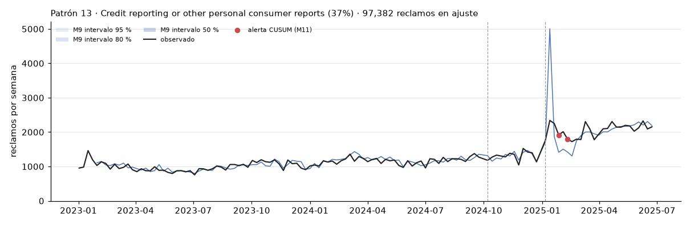
2023-03-09 · Payday loan, title loan, or personal loan
Loan origination date was on or about XX/XX/XXXX for the amount of XXXX dollars. Contacted them in XX/XX/XXXX when the payment amount went up from XXXX dollars to XXXX dollars. During this conversation asked about the loan documents and wh…
2023-10-18 · Mortgage
I had a HELOC agreement with Truist dated XX/XX/XXXX ( which will be attached ). On XXXX, XXXX we entered a new agreement and this previous loan/lien was paid off. The other file attached will show an Internal Payoff-HELCOC for {$110000.00…
2023-06-30 · Vehicle loan or lease
We paid off our Ally Financial loan XX/XX/2023. Its now XX/XX/2023 and still no pick slip. They are refusing to waive the late fees that fall during Covid that is covered under the CARES act
redacted, redacted redacted, account, credit, report, information, credit report, reporting, fcra, consumer
ajuste: 1936 reclamos/semana (17% del total) · calibración: 4042 reclamos/semana (23% del total) · 2025-H1: 7844 reclamos/semana (30% del total).
alertas CUSUM en calibración: 2024-11-11; en 2025-H1 (ya consultado): 3 semanas.
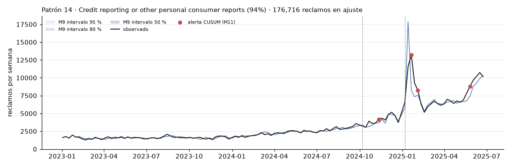
2023-08-16 · Credit reporting or other personal consumer reports
I have called and asked about why my personal information is being furnished without my written permission, which is a violation against my rights and is a crime and i need these credit reporting agencies to do what I am requesting and i d…
2024-05-09 · Credit reporting or other personal consumer reports
Dear Consumer Financial Protection Bureau, I am writing to file a complaint regarding the non-compliance of XXXX, TransUnion, and XXXX with regards to inaccurate reporting of my personal information. Despite my repeated attempts to address…
2023-08-17 · Credit reporting or other personal consumer reports
Good day! I recently wrote to XXXX and Equifax showing my concerns with the fraudulent information that they have been reporting on my credit report. I wrote to them on the XXXX of XX/XX/2023 and also in August 30 days after the previous l…
letters, bureaus continuously, far gotten, happened mailed, continuously far, really sure, sure happened, involved review, gotten response, mailed letters
ajuste: 83 reclamos/semana (1% del total) · calibración: 56 reclamos/semana (0% del total) · 2025-H1: 36 reclamos/semana (0% del total).
sin alertas CUSUM en calibración.
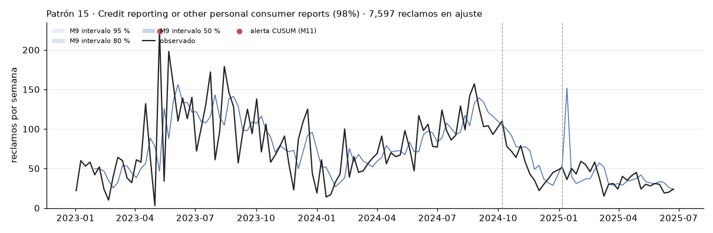
2023-06-28 · Credit reporting or other personal consumer reports
I have never applied for credit. They are fraudulently reporting on my credit report. I filed FTC report with report number XXXX and now requesting CFPB to investigate as well.
2024-03-06 · Credit reporting or other personal consumer reports
I'm really not sure what happened. I have mailed off letters to the credit bureaus continuously and thus far I have not gotten a response. My name is XXXX XXXX XXXX and I am filing this complaint for falsely reporting misleading informatio…
2023-01-26 · Credit reporting or other personal consumer reports
I'm really not sure what happened. I have mailed off letters to the credit bureaus continuously and thus far I have not gotten a response.My name is XXXX XXXX XXXX and I am filing this complaint for falsely reporting misleading information…
consumer, 15, section, reporting agency, 1681, reporting, states, consumer reporting, agency, information
ajuste: 102 reclamos/semana (1% del total) · calibración: 261 reclamos/semana (1% del total) · 2025-H1: 190 reclamos/semana (1% del total).
sin alertas CUSUM en calibración.
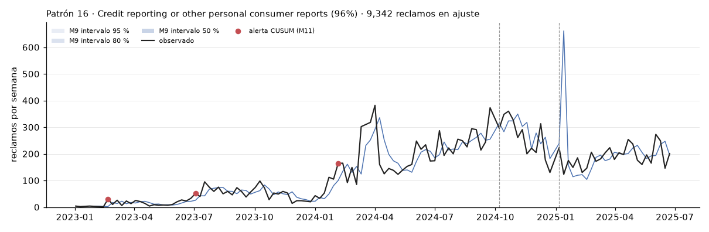
2023-09-27 · Credit reporting or other personal consumer reports
In accordance with the Fair Credit Reporting act. The List of accounts below has violated my federally protected consumer rights to privacy and confidentiality under 15 USC 1681. 15 U.S.C 1681 section 602 A. States I have the right to priv…
2024-09-30 · Credit reporting or other personal consumer reports
In accordance with the Fair Credit Reporting Act, the list of accounts below has violated my federally protected consumer rights to privacy and confidentiality under 15 USC 1681. 15 U.S.C. 1681, section 602 ( A ), states that I have the ri…
2023-03-21 · Credit reporting or other personal consumer reports
In accordance with the fair credit reporting act. The account list below has violated my federally protected consumer rights to privacy and confidentialty under 15 USC 1681. Account name XXXX XXXX Account number XXXX Account name XXXX XXXX…
redacted account, account, account redacted, section, redacted, redacted redacted, 15, 1681, states, consumer
ajuste: 779 reclamos/semana (7% del total) · calibración: 605 reclamos/semana (3% del total) · 2025-H1: 503 reclamos/semana (2% del total).
sin alertas CUSUM en calibración; en 2025-H1 (ya consultado): 1 semanas.
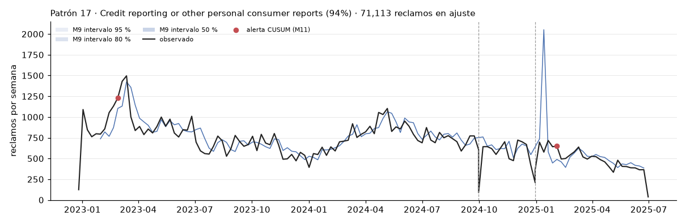
2023-12-27 · Credit reporting or other personal consumer reports
In accordance with the Fair Credit reporting act the following creditors violated my rights under the 15 USC 1681 section 6 o 2 states " I have a right to privacy ( 15 USC 1681 section 604 states a consumer can not furnish an account witho…
2024-05-06 · Debt collection
Good day to whoever is resolving my issue. I just wanted to report my credit card companies that violated my rights by giving third party accounts my information. They also violated my privacy under the Fair Credit Reporting Act, which is …
2023-12-19 · Credit reporting or other personal consumer reports
According to the Fair Credit Reporting act 15 USC 1681 I have the right to privacy. Also according to 15 USC 6802 No financial institution is supposed to share my information to third party people, much of this information was also mistake…
redacted redacted, redacted, permitted, legitimate activity, report, legitimate, activity, credit report, credit, redacted balance
ajuste: 118 reclamos/semana (1% del total) · calibración: 124 reclamos/semana (1% del total) · 2025-H1: 74 reclamos/semana (0% del total).
sin alertas CUSUM en calibración.
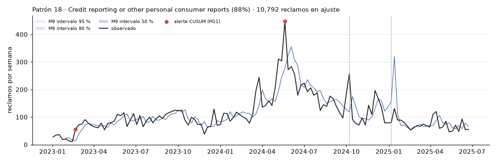
2024-04-30 · Debt collection
Failed to implement adequate procedures to ensure the highest level of accuracy in the credit reports you publish. According to credit reporting laws, it is essential that bureaus only report credit information that is 100 % accurate, and …
2023-06-15 · Credit reporting or other personal consumer reports
As I look out my credit report, I had found out that there are some account that need to be corrected on my credit file. The fact is, this account seems to be inaccurate as well as the accuracy. So in this way, I am complaining for you to …
2023-09-04 · Credit reporting or other personal consumer reports
By the provisions of the Fair Credit Reporting Act, I am submitting this complaint to request that the listed account which I believe appears to be inaccurate and incomplete be immediately investigated and corrected on my credit file. XXXX…
credit, credit report, report, redacted redacted, redacted, identity, accounts, inquiries, theft, identity theft
ajuste: 693 reclamos/semana (6% del total) · calibración: 1378 reclamos/semana (8% del total) · 2025-H1: 1627 reclamos/semana (6% del total).
sin alertas CUSUM en calibración; en 2025-H1 (ya consultado): 1 semanas.
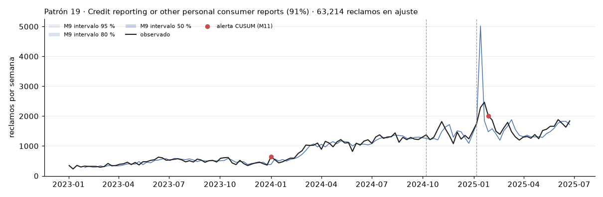
2023-08-07 · Credit reporting or other personal consumer reports
Fraudulent information being reported to my file and needs to be blocked.
2023-01-20 · Credit reporting or other personal consumer reports
I WAS LOOKING AT MY CREDIT AT I SEE THAT I HAVE FRAUD ACCOUNTS ON MY FILE AND I CONTACT THE CREDIT COMPANYS AND ITS STILL NOT UPDATE YET
2024-06-25 · Credit reporting or other personal consumer reports
There is illegal activity on my report. I would value if you would please submit a complaint against against the companies that are reporting.
consumer reports, consent, reports, consumer, consent fraud, reports consent, reports gave, gave written, consent report, purposes consumer
ajuste: 37 reclamos/semana (0% del total) · calibración: 32 reclamos/semana (0% del total) · 2025-H1: 13 reclamos/semana (0% del total).
sin alertas CUSUM en calibración.
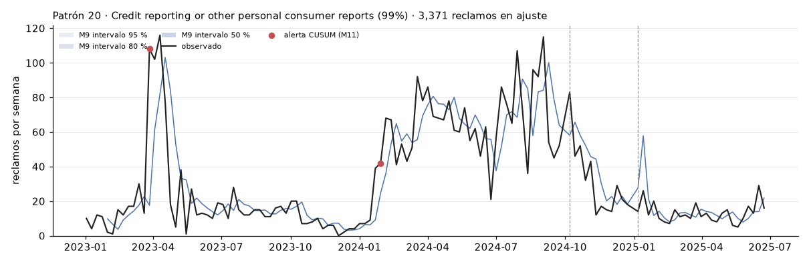
2024-04-24 · Credit reporting or other personal consumer reports
Please take a look at the attached letters and ID docs for verification that it is I XXXX XXXX filing this complaint. The stuff on my credit report is wrong and Under 15 U.S. Code 1681b Permissible purposes of consumer reports I never gave…
2024-09-30 · Credit reporting or other personal consumer reports
Please take a look at the attached letters and ID docs for verification that it is I XXXX T XXXX filing this complaint. The stuff on my credit report is wrong and Under 15 U.S. Code 1681b Permissible purposes of consumer reports I never ga…
2024-02-27 · Credit reporting or other personal consumer reports
Please take a look at the attached letters and ID docs for verification that it is I XXXX XXXX is complaint. The stuff on my credit report is wrong and Under 15 U.S. Code 1681b Permissible purposes of consumer reports i never gave any writ…
start investigation, bureau start, documents want, want bureau, start, investigation accounts, accounts late, reporting late, late, attached documents
ajuste: 45 reclamos/semana (0% del total) · calibración: 50 reclamos/semana (0% del total) · 2025-H1: 71 reclamos/semana (0% del total).
sin alertas CUSUM en calibración; en 2025-H1 (ya consultado): 1 semanas.
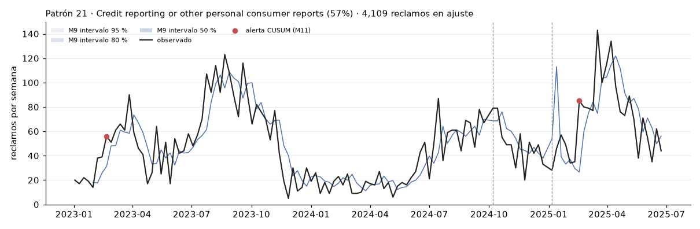
2023-12-15 · Credit card
See the attached documents. I want the bureau to start the investigation on these accounts that I am never late for but they're reporting me as late.
2023-10-11 · Credit reporting or other personal consumer reports
My name is XXXX XXXX, this complaint is not made in error neither is it being made by a third party. I declare under penalty of perjury I am alleging that a person or company- without my authorization- from unauthorized use of my social se…
2023-05-12 · Credit reporting or other personal consumer reports
My name is XXXX XXXX this complaint is not made in error neither is it being made by a third party.I declare under penalty of perjury I am alleging that a person or company- without my authorization- from unauthorized use of my social secu…
redacted redacted, redacted, law, written requests, violation federal, requests, items, federal law, consumer, accounts
ajuste: 141 reclamos/semana (1% del total) · calibración: 190 reclamos/semana (1% del total) · 2025-H1: 201 reclamos/semana (1% del total).
sin alertas CUSUM en calibración; en 2025-H1 (ya consultado): 1 semanas.
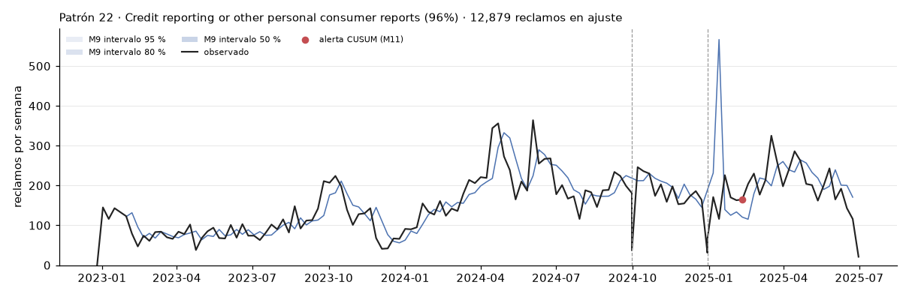
2023-08-03 · Credit reporting or other personal consumer reports
The following items continue to report on my credit report without my permission, in violation of federal law, despite numerous written requests. As required by Sections 609 ( a ) ( 1 ) ( A ) and 611 ( a ) ( 1 ), these items must be verifi…
2023-09-27 · Credit reporting or other personal consumer reports
Despite multiple written requests, the unverified accounts listed below continue to report on my credit report, in violation of federal law. These accounts must be validated under Sections 609 ( a ) ( 1 ) ( A ) and 611 ( a ) ( 1 ). ( A ). …
2023-07-31 · Credit reporting or other personal consumer reports
The following items continue to report on my credit report without my permission, in violation of federal law, despite numerous written requests. As required by Sections 609 ( a ) ( 1 ) ( A ) and 611 ( a ) ( 1 ), these items must be verifi…
15, consumer, agency, section, reporting, reporting agency, 1681, states, consumer reporting, information
ajuste: 70 reclamos/semana (1% del total) · calibración: 108 reclamos/semana (1% del total) · 2025-H1: 137 reclamos/semana (1% del total).
sin alertas CUSUM en calibración.
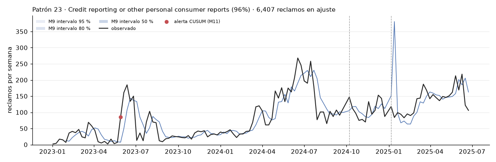
2024-07-13 · Credit reporting or other personal consumer reports
In accordance with the Fair Credit Reporting Act. The List of accounts below has violated my federally protected consumer rights to privacy and confidentiality under 15 USC 1681. XXXX XXXX XXXXXXXX 15 U.S.C 1681 section 602 A. States I hav…
2023-01-12 · Credit reporting or other personal consumer reports
In accordance with the Fair Credit Reporting act. The List of accounts below has violated my federally protected consumer rights to privacy and confidentiality under 15 USC 1681. Account name : 1. Bank of America has violated my rights. 15…
2023-03-27 · Credit reporting or other personal consumer reports
In accordance with the Fair Credit Reporting Act. The List of Accounts in my letter has violated my federally protected consumer rights to privacy and confidentiality under 15 USC 1681. 15 U.S.C 1681 Section 602 A. States I have the right …
redacted redacted, items, redacted, stress, accounts, unseen, identity, disputed items, remove, stolen
ajuste: 106 reclamos/semana (1% del total) · calibración: 167 reclamos/semana (1% del total) · 2025-H1: 134 reclamos/semana (1% del total).
sin alertas CUSUM en calibración.
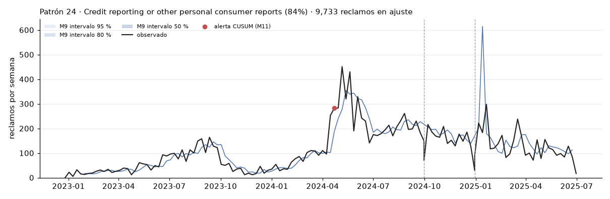
2024-06-21 · Credit reporting or other personal consumer reports
I disputed incorrect negative items on my credit report with Transition, XXXX, and XXXX. The items came back verified by all XXXX credit bureaus, so I responded with a verification letter asking for methods used when investigating my dispu…
2024-05-29 · Credit reporting or other personal consumer reports
According to my research about FCRA 605, Credit Bureaus are required by law to remove any items which are found to be opened due to identity theft. Again, it appears that my credit with you has been compromised, these items being reported …
2024-07-10 · Credit reporting or other personal consumer reports
According to my research about FCRA 605, Credit Bureaus are required by law to remove any items which are found to be opened due to identity theft. Again, it appears that my credit with you has been compromised, these items being reported …
sections 609, sections, 609 611, 609, redacted, 611, redacted redacted, redacted balance, balance, 00
ajuste: 156 reclamos/semana (1% del total) · calibración: 164 reclamos/semana (1% del total) · 2025-H1: 188 reclamos/semana (1% del total).
sin alertas CUSUM en calibración; en 2025-H1 (ya consultado): 1 semanas.
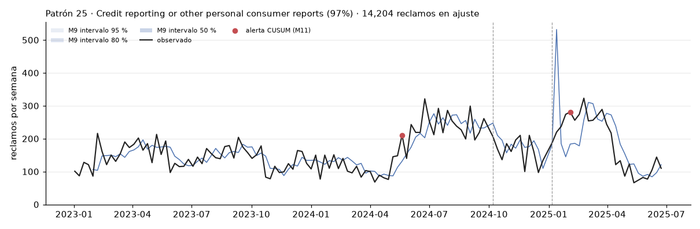
2024-04-11 · Credit reporting or other personal consumer reports
Upon examining my credit report, I identified inaccuracies in certain information. According to Sections 609 ( a ) ( 1 ) ( A ) and 611 ( a ) ( 1 ) ( A ), it is imperative for the Equifax and XXXX credit bureaus to authenticate these accoun…
2023-03-27 · Credit reporting or other personal consumer reports
I checked my credit report and found that some of the data were incorrect. Equifax is required by Sections 609 ( a ) ( 1 ) ( A ) and 611 ( a ) ( 1 ) to verify this item ( A ). It is not permitted to report this item as unverified informati…
2023-07-26 · Credit reporting or other personal consumer reports
When I investigated my credit report, I realized that some of the information was erroneous. The Equifax and XXXX credit bureaus are required to authenticate the account under Sections 609 ( a ) ( 1 ) ( A ) and 611 ( a ) ( 1 ). ( A ). It i…
accounts, credit, report, credit report, information, 15, consumer, accounts credit, reporting, fcra 605b
ajuste: 123 reclamos/semana (1% del total) · calibración: 126 reclamos/semana (1% del total) · 2025-H1: 133 reclamos/semana (1% del total).
sin alertas CUSUM en calibración.
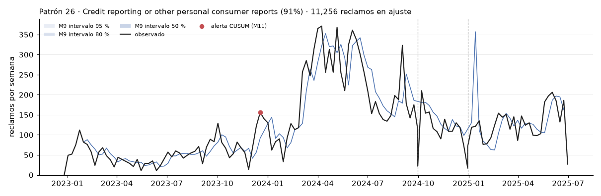
2024-05-30 · Credit reporting or other personal consumer reports
I'm disputing and investigating these wrongly reported accounts on my credit file. According to the Fair Credit Report Act, I should get XXXX} for each mistake. The FCRA 605B says we must report any incorrect accounts on a consumer 's repo…
2024-03-28 · Credit reporting or other personal consumer reports
I believe FCRA 605B necessitates the elimination of any erroneous accounts from my credit report. Could you kindly review the paperwork? Several of the mentioned accounts exhibit inaccuracies in terms of reporting
2024-05-11 · Credit reporting or other personal consumer reports
FCRA 605B mandates the removal of any erroneous accounts from my credit report. Could you review the documents? Some accounts listed have inaccuracies regarding reporting, amounts, and dates.
redacted redacted, redacted, report, credit report, inquiry credit, fraud inquiry, remove fraud, theft remove, theft, information
ajuste: 88 reclamos/semana (1% del total) · calibración: 63 reclamos/semana (0% del total) · 2025-H1: 30 reclamos/semana (0% del total).
sin alertas CUSUM en calibración.
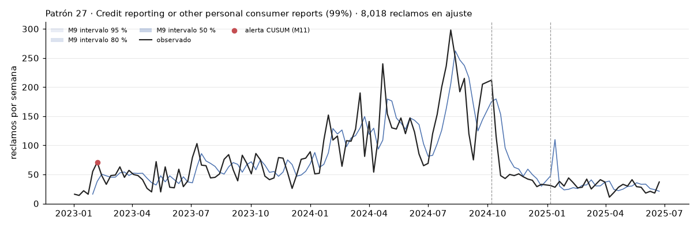
2024-09-23 · Credit reporting or other personal consumer reports
IM A VICTIM OF IDENTITY THEFT PURSUANT TO FEDERAL LAW SECTION 605B YOU MUST REMOVE THE FRAUDULENT INFORMATION FROM MY NAME. I HAVE ATTACHED PAPERWORK SHOWING THE FRAUDULENT INFORMATION.
2023-11-25 · Debt collection
This company is damaging my credit in an abusive way, I have called those people to tell them to show me that it is mine and they have no way to prove it, I have never used their services or anything like that, I ask for help to remove thi…
2023-11-16 · Credit reporting or other personal consumer reports
I already told them this info is not mines and im victim of identity theft. I need this info removed please.
accounts, report, debt, credit, 15, code, credit report, consumer, 15 code, inaccurate
ajuste: 76 reclamos/semana (1% del total) · calibración: 208 reclamos/semana (1% del total) · 2025-H1: 150 reclamos/semana (1% del total).
sin alertas CUSUM en calibración.
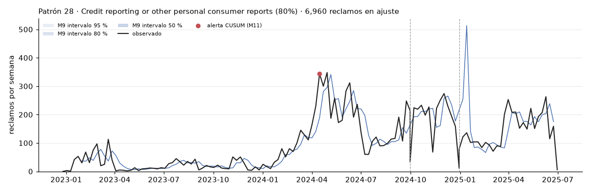
2024-06-27 · Credit reporting or other personal consumer reports
In accordance with the Fair Credit Reporting Act. The List of accounts below has violated my federally protected consumer rights to privacy and confidentiality under 15 USC 1681. has violated my rights. Or a list of inquiries : 15 U.S.C 16…
2023-07-26 · Credit reporting or other personal consumer reports
In accordance with the Fair Credit Reporting act. The List of accounts below has violated my federally protected consumer rights to privacy and confidentiality under 15 USC 1681. 15 U.S.C 1681 section 602 A. States I have the right to priv…
2023-06-12 · Credit reporting or other personal consumer reports
In accordance with the Fair Credit Reporting act. The List of accounts below has violated my federally protected consumer rights to privacy and confidentiality under 15 USC 1681. The letters are stated with items and issues. 15 U.S.C 1681 …
identity, theft, identity theft, redacted redacted, redacted, items, federal, federal trade, trade, report
ajuste: 100 reclamos/semana (1% del total) · calibración: 115 reclamos/semana (1% del total) · 2025-H1: 246 reclamos/semana (1% del total).
alertas CUSUM en calibración: 2024-12-09; en 2025-H1 (ya consultado): 1 semanas.
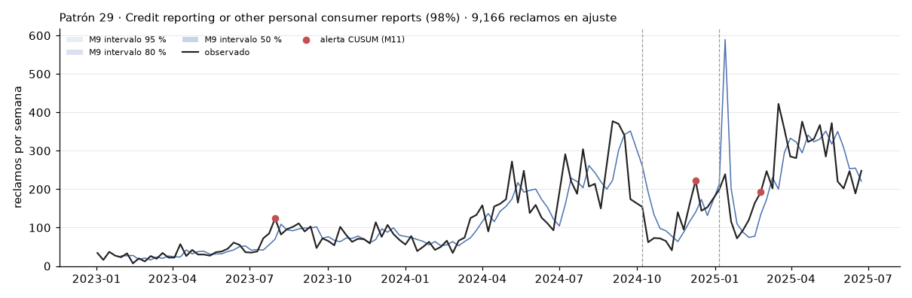
2023-01-18 · Credit reporting or other personal consumer reports
This is the several time I've complained about being a victim of identity theft. The XXXX Credit Bureaus must remove any item that was opened without my knowledge, consent, or authority within XXXX business days with ( 1 ) appropriate proo…
2023-08-23 · Credit reporting or other personal consumer reports
This is the several times I've complained about being a victim of identity theft. You must remove/block any account that was opened without my knowledge, consent, or authority within 4 business days with ( 1 ) appropriate proof of the iden…
2023-10-24 · Credit reporting or other personal consumer reports
This is the several times I've complained about being a victim of identity theft. You must remove/block any items that was opened without my knowledge, consent, or authority within 4 business days with ( 1 ) appropriate proof of the identi…
payment, late, payments, creditor, mailed delivered, periodic, delivered, periodic statement, 1637, 21 days
ajuste: 236 reclamos/semana (2% del total) · calibración: 406 reclamos/semana (2% del total) · 2025-H1: 369 reclamos/semana (1% del total).
sin alertas CUSUM en calibración; en 2025-H1 (ya consultado): 1 semanas.
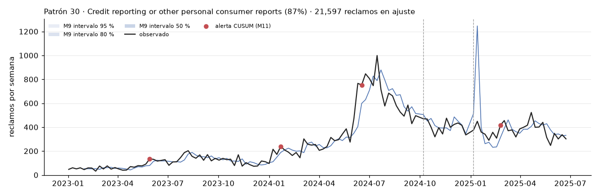
2023-08-18 · Credit reporting or other personal consumer reports
I reviewed my Consumer Reports and noticed that I had two late payments on an account that I was never late for. Consumer Reporting Agencies have assumed a vital role and have a responsibility to report Consumer Information to the best of …
2024-02-16 · Credit reporting or other personal consumer reports
I reviewed my Consumer Reports and noticed that I had two late payments on an account that I was never late for. Consumer Reporting Agencies have assumed a vital role and have a responsibility to report Consumer information to the best of …
2024-07-15 · Credit reporting or other personal consumer reports
I reviewed my Consumer Reports and noticed that I had two late payments on an account that I was never late for Consumer Reporting Agencies have assumed a vital role and have a responsibility to report Consumer information to the best of t…
need reporting, reporting correction, correction company, identified inaccurate, inaccurate accounts, reviewing credit, report identified, accounts need, reviewing, identified
ajuste: 88 reclamos/semana (1% del total) · calibración: 250 reclamos/semana (1% del total) · 2025-H1: 313 reclamos/semana (1% del total).
sin alertas CUSUM en calibración.
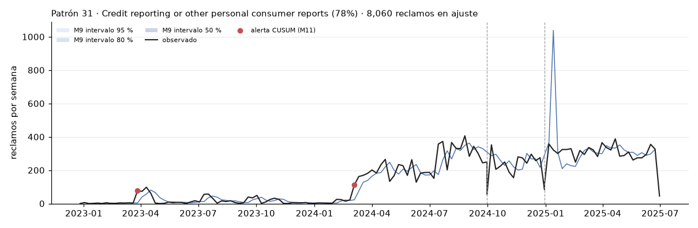
2024-07-26 · Credit reporting or other personal consumer reports
Upon reviewing my credit report, I have identified inaccurate accounts that need reporting and correction through your company.
2024-08-07 · Credit reporting or other personal consumer reports
I value my credit a lot and the inaccuracy in my report has negatively affected my financial opportunities as well as my XXXX XXXX
2024-07-12 · Credit reporting or other personal consumer reports
I value my credit a lot and the inaccuracy in my report has negatively affected my financial opportunities as well as my XXXX XXXX.
redacted redacted, redacted, credit, late payment, section, consumer, 15, verify, information, 1681
ajuste: 99 reclamos/semana (1% del total) · calibración: 108 reclamos/semana (1% del total) · 2025-H1: 86 reclamos/semana (0% del total).
alertas CUSUM en calibración: 2024-12-23; en 2025-H1 (ya consultado): 1 semanas.
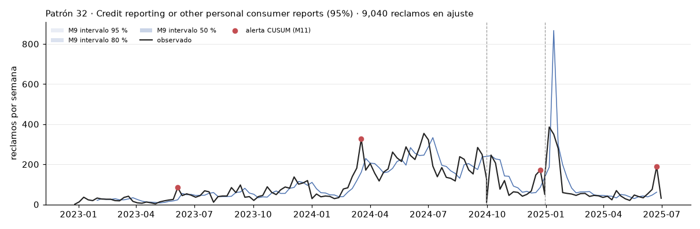
2024-08-14 · Credit reporting or other personal consumer reports
I filed a dispute for incorrect information on my credit report. I received an email from the credit bureau stating that they are assuming the disputes are coming from a 3rd party. They in fact did not come from a 3rd party. l even called …
2023-09-20 · Debt collection
This letter is a formal complaint that you are reporting inaccurate incomplete Credit information. According to the fair credit reporting act section 609A1A who are required by law to verify through physical verification of the original si…
2024-01-06 · Credit reporting or other personal consumer reports
XXXX XXXX XXXX XXXX XXXX XXXX XXXX XXXX XXXX XXXX XXXX XXXX XXXX XXXX XXXX XXXX XXXX XXXX XXXX XXXX XXXX XXXX XXXX XXXX XXXX XXXX XXXX XXXX XXXX XXXX XXXX XXXX XXXX XXXX XXXX XXXX XXXX XXXX XXXX XXXX XXXX XXXX XXXX XXXX XXXX XXXX XXXX XXXX…
payments, updated records, consistently maintained, precise updated, seeking precise, reflect timely, perplexing discover, maintained time, records accurately, payments perplexing
ajuste: 77 reclamos/semana (1% del total) · calibración: 15 reclamos/semana (0% del total) · 2025-H1: 14 reclamos/semana (0% del total).
sin alertas CUSUM en calibración.
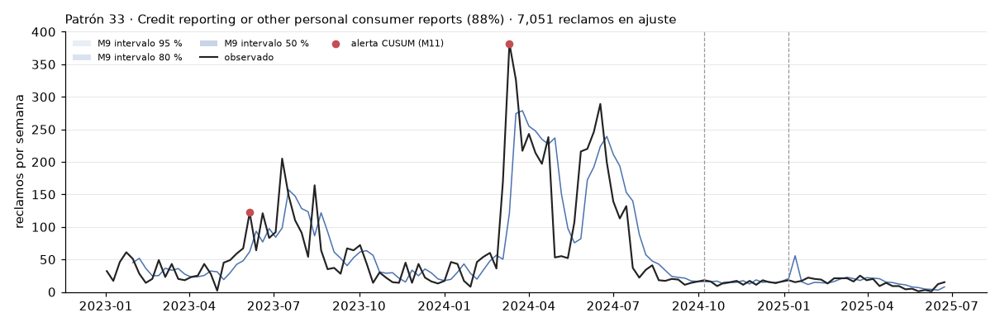
2024-03-20 · Credit card
I have consistently made on-time payments, and it is unjust to be penalized with this erroneous entry. I urge you to update my account without delay.
2024-02-07 · Credit card
It's unfair that I've consistently made on-time payments for this account and have never been late. Please correct my account to accurately reflect this.
2024-04-22 · Credit reporting or other personal consumer reports
I have consistently maintained on-time payments, so I find it perplexing to discover an error in my credit report. I am seeking precise and updated records that accurately reflect my timely payments for those accounts. I sincerely hope that
letters, bureaus continuously, happened mailed, really sure, far gotten, continuously far, sure happened, involved review, gotten response, mailed letters
ajuste: 72 reclamos/semana (1% del total) · calibración: 35 reclamos/semana (0% del total) · 2025-H1: 32 reclamos/semana (0% del total).
sin alertas CUSUM en calibración; en 2025-H1 (ya consultado): 1 semanas.
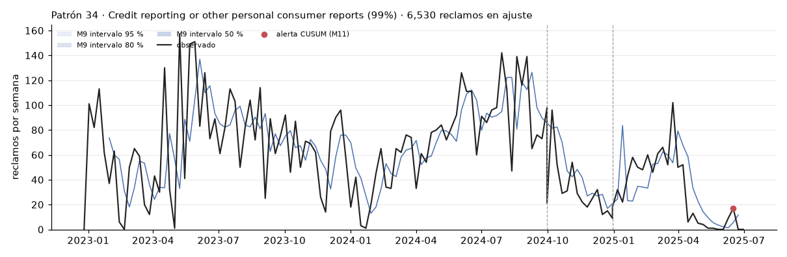
2024-05-20 · Credit reporting or other personal consumer reports
I'm really not sure what happened. I have mailed off letters to the credit bureaus continuously and thus far I have not gotten a response. My name is XXXX XXXX and I am filing this complaint for falsely reporting misleading information. Th…
2023-03-13 · Credit reporting or other personal consumer reports
I'm really not sure what happened. I have mailed off letters to the credit bureaus continuously and thus far I have not gotten a response.My name is XXXX XXXX and I am filing this complaint for falsely reporting misleading information.Ther…
2023-11-10 · Credit card
I was contacted by phone on XX/XX/XXXX, about being late in making payments on a credit card. After talking to this customer service person, I realized that this was fraud as I had never personally applied for a XXXX credit card from Ollo/…
dispute incorrect, invalid items, referenced issues, incorrect invalid, letter referenced, assistance creditors, gotten assistance, report gotten, documents letter, matter attached
ajuste: 32 reclamos/semana (0% del total) · calibración: 28 reclamos/semana (0% del total) · 2025-H1: 11 reclamos/semana (0% del total).
sin alertas CUSUM en calibración.
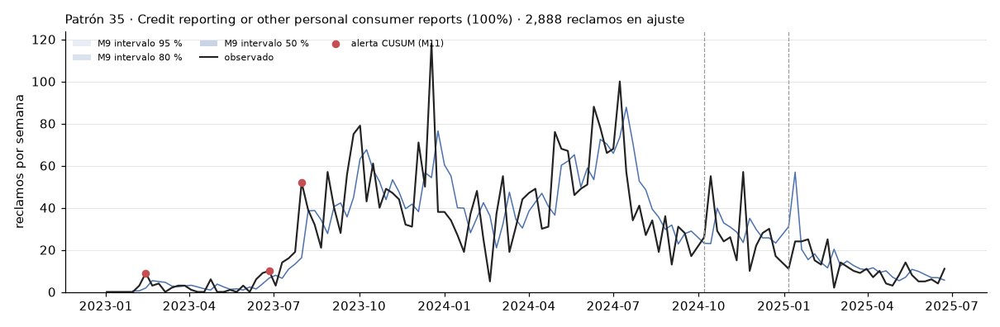
2024-01-30 · Credit reporting or other personal consumer reports
I have been trying to dispute incorrect and/or invalid items listed on my credit report and have gotten no assistance from the creditors or the credit bureaus regarding this matter. Please see attached documents and letter for referenced i…
2024-03-20 · Credit reporting or other personal consumer reports
I filed a dispute for incorrect information on my credit report. I received an email from the credit bureau stating that they are assuming the disputes are coming from a 3rd party. They in fact did not come from a 3rd party. l even called …
2024-05-22 · Credit reporting or other personal consumer reports
Remove these inquiries, as I have no knowledge of them, and the company executed this without my approval.
consumer, information, redacted, reporting, 15, redacted redacted, usc, 15 usc, consumer reporting, account
ajuste: 587 reclamos/semana (5% del total) · calibración: 633 reclamos/semana (4% del total) · 2025-H1: 826 reclamos/semana (3% del total).
sin alertas CUSUM en calibración; en 2025-H1 (ya consultado): 1 semanas.
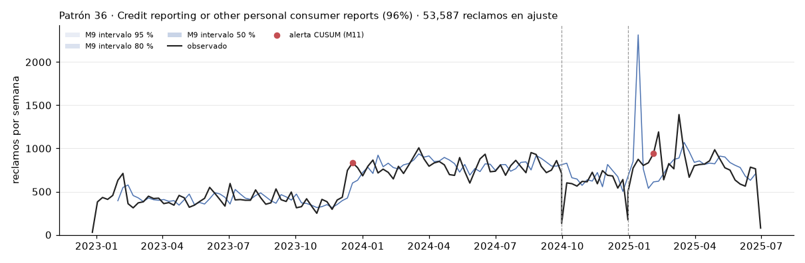
2024-08-21 · Credit reporting or other personal consumer reports
15 usc 1692 design to eliminate abusive, deceptive, and unfair debt collection practices 15 usc 1681s-2 Responsibility of furnishers of information to consumer reporting agencies 15 usc 1681 ( n ) Civil liability for wilful non compliance …
2024-07-27 · Credit reporting or other personal consumer reports
XXXX XXXXXXXX XXXX / self lender, has reported on my account that I had a late payment on a closed out account it was closed out on XX/XX/XXXX with a XXXX balance and it was reported late on the XX/XX/XXXX And XX/XX/XXXX showing a XXXX bal…
2024-09-03 · Vehicle loan or lease
15 U.S. Code 1681a - Definitions ; rules of construction U.S. Code Notes prev ( XXXX XXXX XXXX ) | next ( XXXX XXXX XXXX ) ( a ) Definitions and rules of construction set forth in this section are applicable for the purposes of this subcha…
letters, reporting, inaccurate date, date, written, 15, credit, report, section, 1681
ajuste: 69 reclamos/semana (0% del total) · calibración: 88 reclamos/semana (1% del total) · 2025-H1: 76 reclamos/semana (0% del total).
sin alertas CUSUM en calibración; en 2025-H1 (ya consultado): 1 semanas.
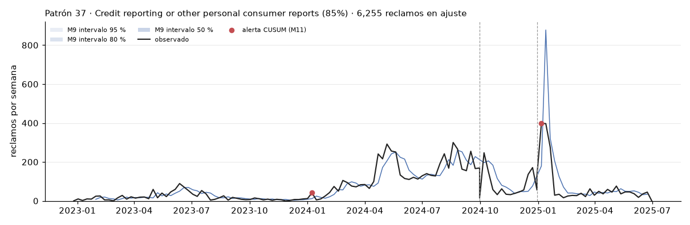
2024-09-20 · Credit reporting or other personal consumer reports
I'm really not sure what happened. I have mailed off letters to the credit bureaus continuously and thus far I have not gotten a response. My name is XXXX XXXX and I am filing this complaint for falsely reporting misleading information. Th…
2024-09-23 · Credit reporting or other personal consumer reports
I'm really not sure what happened. I have mailed off letters to the credit bureaus continuously and thus far I have not gotten a response. My name is XXXX XXXX and I am filing this complaint for falsely reporting misleading information. Th…
2023-11-16 · Credit reporting or other personal consumer reports
Good evening, The accounts listed in the report attached do not belong to me. Please help me remove them and rectify this as soon as possible. Thank you.
payment, late, complaint, error, creditor, complaint bureaus, payment late, days payment, mailed delivered, payment date
ajuste: 69 reclamos/semana (1% del total) · calibración: 245 reclamos/semana (1% del total) · 2025-H1: 196 reclamos/semana (1% del total).
sin alertas CUSUM en calibración.
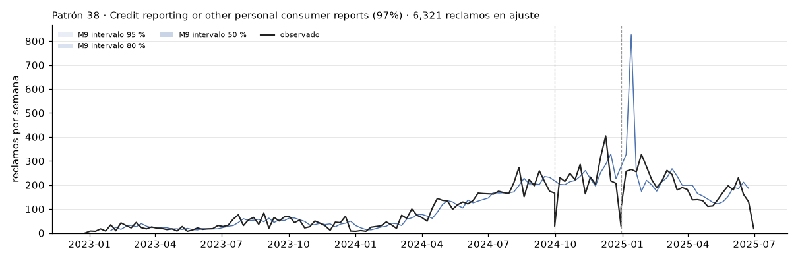
2024-08-21 · Credit reporting or other personal consumer reports
My account with ALLY FINCL was never late! I have had exceptional payment history witH XXXX XXXX and all payments were placed on Autopay. This late payment that is reporting is a result on a systematic error on their end processing my paym…
2024-07-19 · Credit reporting or other personal consumer reports
My account with MERCEDES BENZ FINANCIAL was never late! I have had exceptional payment history witH XXXX XXXX and all payments were placed on Autopay. This late payment that is reporting is a result on a systematic error on their end proce…
2024-07-08 · Credit reporting or other personal consumer reports
My accounts was never late! I have had exceptional payment history with capital one and all payments were placed on Autopay. This late payment that is reporting is a result on a systematic error on their end processing my payment. This was…
section, consumer, 15, information, 1681, states, reporting agency, consumer reporting, agency, reporting
ajuste: 93 reclamos/semana (1% del total) · calibración: 166 reclamos/semana (1% del total) · 2025-H1: 147 reclamos/semana (1% del total).
sin alertas CUSUM en calibración.
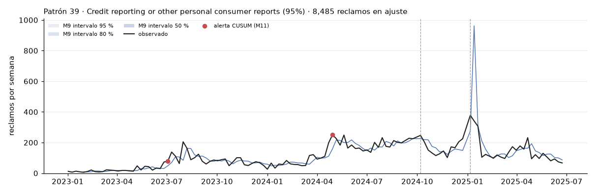
2024-07-04 · Credit reporting or other personal consumer reports
In accordance with the Fair Credit Reporting act. The List of accounts below has violated my federally protected consumer rights to privacy and confidentiality under 15 USC 1681. 15 U.S.C 1681 section 602 A. States I have the right to priv…
2024-06-05 · Credit reporting or other personal consumer reports
In accordance with the Fair Credit Reporting act. The List of accounts below has violated my federally protected consumer rights to privacy and confidentiality under XXXX5 USC 1681. 15 U.S.C 1681 section 602 A. States I have the right to p…
2024-04-24 · Credit reporting or other personal consumer reports
In accordance with the Fair Credit Reporting act. The List of accounts below has violated my federally protected consumer rights to privacy and confidentiality under 15 USC 1681. 15 U.S.C 1681 section 602 A. States I have the right to priv…